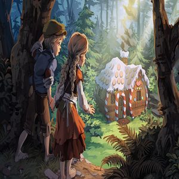

Story of one family
Hansel And Gretel
read the story
Once upon a time a brother and sister named Hansel and Gretel lived in a hut in the woods with their father.
Their father was a poor woodcutter. His wife, their mother, had died when the two children were very young.
Their father thought he would not be lonely anymore when he finally re-married.
But the new stepmother made life very hard for Hansel and Gretel.
The children were not allowed to eat until after the stepmother had taken everything she wanted off the plates.
Most of the time, there was only a crust of bread left. And all day long were hard chores for them to do.
Hansel and Gretel tried to tell their father about this but he would not hear of it.
It seemed the only one he would listen to was his wife. And all the stepmother talked about was how much trouble it was to have children in the hut,
and how much she wished they would go away forever.Each day there was less and less food for the boy and girl to eat.
Yet the stepmother gave them more and more hard work to do. One day Gretel begged her father, “Please, Father! All day long we work hard and we’re hungry!”
But the stepmother slapped her face.“You ungrateful brats!" she yelled. "You will eat us out of house and home!”
That night the two children were not allowed to sleep in the hut. Outside in the cold, they shivered and tried to keep each other warm.
Winter was coming, and the clothes they wore were so thin it felt almost as if they had no clothes on at all.

Read more stories
seemed the only one he would listen to was his wife. And all the stepmother talked about was how much trouble it was to have children in the hut,
and how much she wished they would go away forever.Each day there was less and less food for the boy and girl to eat.
Yet the stepmother gave them more and more hard work to do. One day Gretel begged her father, “Please, Father! All day long we work hard and we’re hungry!”
But the stepmother slapped her face.“You ungrateful brats!" she yelled. "You will eat us out of house and home!”
That night the two children were not allowed to sleep in the hut. Outside in the cold, they shivered and tried to keep each other warm.
Winter was coming, and the clothes they wore were so thin
List of some stories
- They skipped into the witch's hut.
- "Go inside the oven, won't you?"
- Then she went back to that vase.
admin@website.com